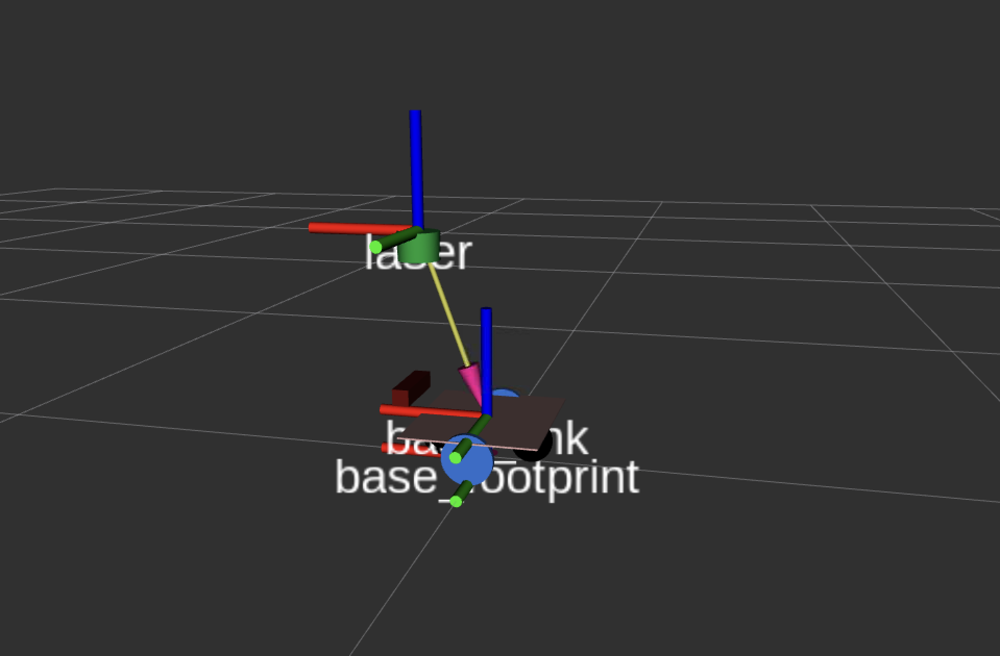

Setting Up Transforms (TF)¶
What Is TF2?¶
Every sensor, every wheel, every joint on your robot exists somewhere in 3D space. But "somewhere" is only meaningful relative to something else. TF2 is the ROS2 system for tracking these spatial relationships, maintaining a tree of coordinate frames, each with a known position and orientation relative to its parent.
When a laser scan comes in saying "there's an obstacle 0.5 meters ahead," TF2 is what lets the rest of the system answer: "0.5 meters ahead of what, and where does that translate to in the map?"
Without a correctly configured TF tree, SLAM can't build a map, Nav2 can't plan a path, and the laser scan won't align with the robot model in RViz.
The TF Tree in linorobot2¶
linorobot2 uses the following coordinate frame hierarchy:
map
└── odom
└── base_footprint
└── base_link
├── laser (2D lidar)
├── camera_link (depth camera)
└── imu_link (IMU)
Each arrow (└──) represents a transform, a known spatial relationship between two frames. Here's what establishes each one:

map → odom¶
This transform represents the robot's position within the global map. It accounts for the accumulated error in odometry (the difference between where odometry thinks the robot is and where it actually is).
- During mapping (SLAM Toolbox): SLAM Toolbox publishes this transform by continuously matching the incoming laser scan against the map it's building.
- During navigation (AMCL): AMCL publishes this transform by comparing the laser scan against the pre-built map to localize the robot.
If this transform is missing, you'll see the error: Invalid frame ID "map" passed to canTransform. This means SLAM or AMCL isn't running yet, or the robot's initial pose hasn't been set.
odom → base_footprint¶
This is the robot's odometry-based position estimate of where the robot is within the local odometry frame, based purely on wheel encoders and IMU. It drifts over time (that's what map → odom corrects for).
- Published by:
robot_localization(the EKF node), configured viaekf.yaml.
base_footprint is a 2D projection of the robot's center onto the floor plane, always at z=0. This is the standard frame for ground robots in ROS2.
base_footprint → base_link¶
A static transform between the 2D floor projection and the actual robot body center. The robot's URDF defines this.
- Published by:
robot_state_publisher, which reads the URDF and publishes all static transforms.
base_link → sensors¶
Static transforms from the robot body to each sensor. These are also defined in the URDF and published by robot_state_publisher.
base_link → laser: Where the 2D lidar is mounted.base_link → camera_link: Where the depth camera is mounted.base_link → imu_link: Where the IMU is mounted.
Getting these transforms right is critical. If the lidar is 30 cm forward of center and 33 cm above the ground but your URDF says 0 cm, every laser scan will be placed in the wrong location and SLAM will fail to build a coherent map.
Configuring Sensor Positions¶
Sensor positions relative to base_link are set in:
For example, the default 2WD configuration:
<xacro:property name="laser_pose">
<origin xyz="0.12 0 0.33" rpy="0 0 0"/>
</xacro:property>
<xacro:property name="depth_sensor_pose">
<origin xyz="0.14 0.0 0.045" rpy="0 0 0"/>
</xacro:property>
The xyz values are in meters, measured from base_link:
x: forward (positive) / backward (negative) from centery: left (positive) / right (negative) from centerz: height above the ground plane
The rpy values are rotation in radians (roll, pitch, yaw). For a forward-facing sensor mounted level, these are all 0 0 0.
After editing the xacro file, rebuild the workspace on the robot computer (and also the host machine if you're simulating):
Visualizing the URDF¶
Before running SLAM, it's a good idea to check that the robot model and sensor poses look correct.
From the robot computer:¶
From the host machine (with RViz):¶
Or, if working on the host machine directly:
In RViz, add the RobotModel display and check that the sensor positions match your physical robot.
Verifying the TF Tree¶
Once the robot is running (bringup launched, SLAM or AMCL running), you can inspect the full TF tree:
This generates a frames.pdf file showing every frame and the transform that connects it to its parent. Open it and check:
- All expected frames are present.
- The tree is connected, with no orphaned frames.
- Transforms are being published at a reasonable rate.
You can also check individual transforms in real time:
This prints the current transform from base_link to laser every time it updates.
Common Issues¶
Laser scan doesn't align with walls in RViz
The laser_pose in your properties file doesn't match where the sensor is physically mounted. Measure carefully and rebuild.
slam_toolbox: Message Filter dropping message: frame 'laser'
The TF from base_footprint to laser isn't arriving fast enough. Try increasing transform_timeout in linorobot2_navigation/config/slam.yaml by 0.1 until the warning disappears.
target_frame - frame does not exist
There's likely a syntax error in your <robot_type>_properties.urdf.xacro. Check for repeated decimal points or mismatched XML tags.
What's Next¶
With the TF tree correctly configured, every sensor reading is spatially grounded, meaning the system knows exactly where in the world each measurement came from. Now you're ready to start building a map. See Mapping.